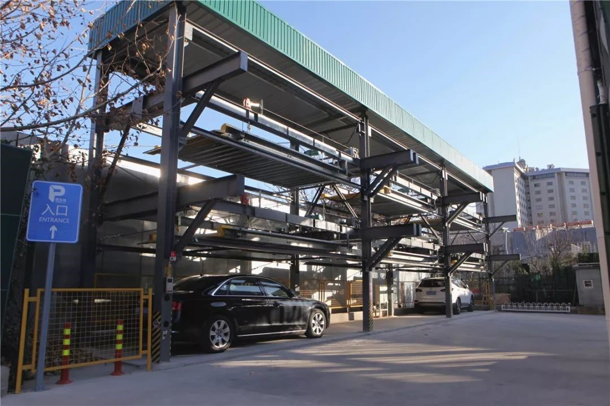

小汽车“上楼”，胡同宽敞了！
来源：北京东城
建国门街道苏州胡同的居民近日发现，胡同东西口3座立体停车楼悄然启用，原来停在胡同里的小汽车纷纷“上楼”，胡同里宽敞多了。
绿色的棚顶，白色镂空的外表，在内蒙古大厦南侧，2座崭新的停车楼已经正式启用。在停车管理员的操作下，车位升升降降，很多来停车的市民都觉得有些新鲜。一座停车楼的占地面积原本只能停约10辆车，现在能容下30多辆车。社会车辆来临时停车，收费是1个小时15元。

会上，夏林茂以《坚持优质均衡发展 举全区之力 因为不收费、不贴条，之前，汽车都挤在胡同里停着。停一辆车，就占去胡同三分之二路面，行人通过很不方便。如今，苏州社区请来专业停车公司，3座停车楼共90多个车位，加上一些路侧车位，共开辟出150多个停车位，这些车位优先供周围居民使用。
“周边居民共登记了500多个车位需求。我们是房产证、户口本、行驶本三证合一的先登记，请公证处摇号，先摇出了88位车主；后期剩下车位再给两证合一的，再摇号。”苏州社区党委副书记谢辉介绍，此举就是为了解决社区居民停车难，之后苏州胡同主胡同将打造不停车的胡同。

立体停车楼车场工作人员表示，苏州胡同这几天正在进行车辆清理。很多僵尸车不是周边居民的车，常年停在此处，若联系不上车主，只能清拖拉走。

据了解，东城区正在推行“胡同不停车”，同时为地区居民挖掘更多停车资源。如王府井地区与9处停车场合作，提供600余个车位；南锣鼓巷地区与1处停车场合作，提供车位150个；西总布胡同与2处停车场合作，提供车位120个；青龙胡同与1处停车场合作，提供车位350个；前门地区与1到2处停车场合作，提供300余个车位。目前已有21条街巷实现胡同不停车。按照整体计划，到2025年，东城区所有胡同都计划实现“不停车胡同”。